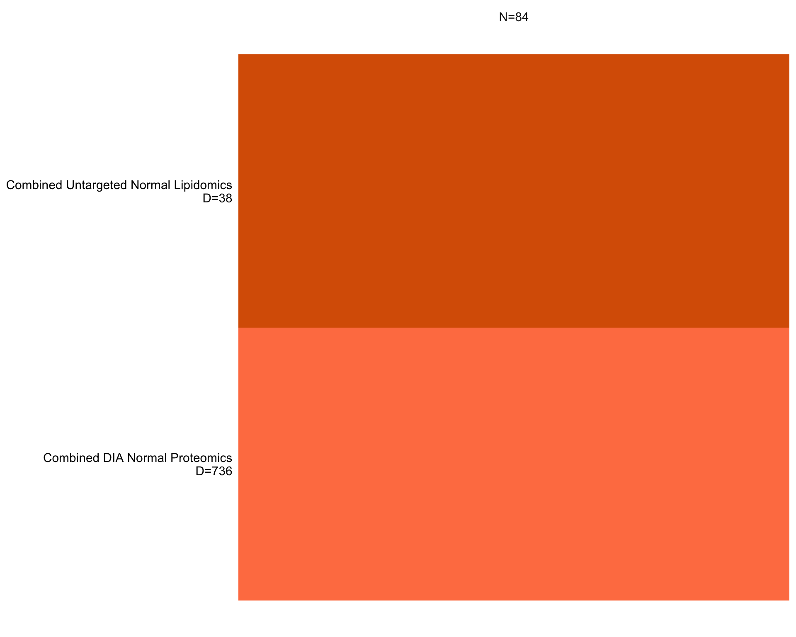
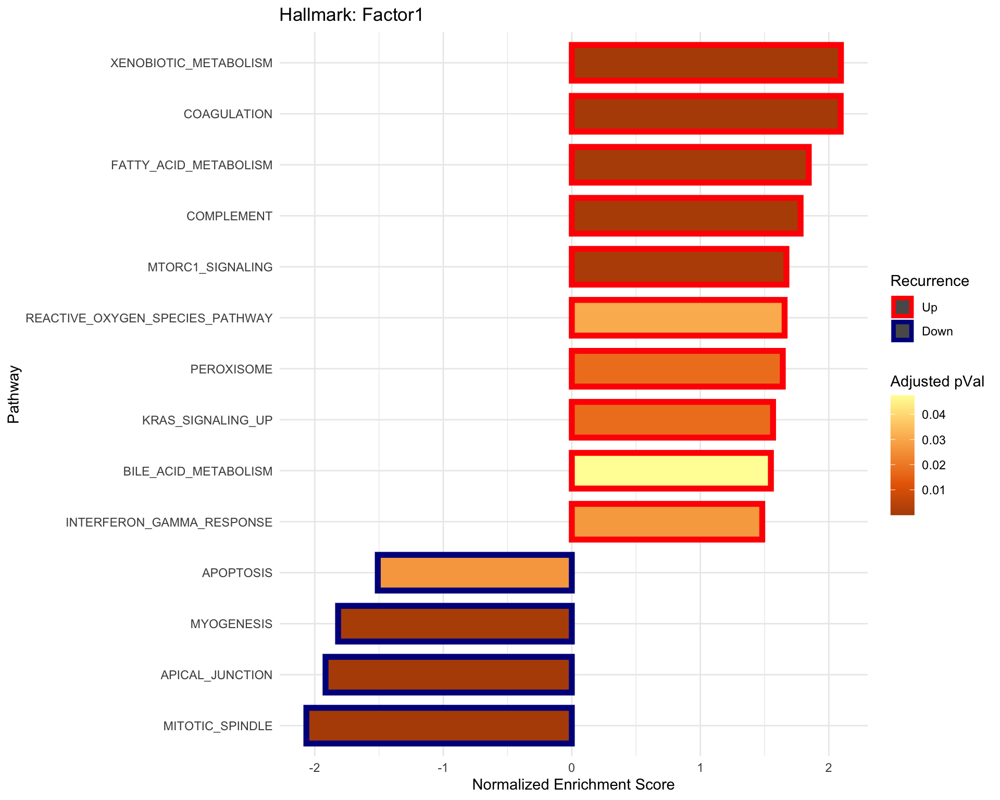
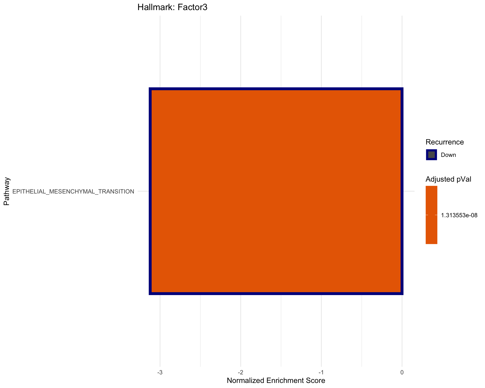

MOFA: Downstream analysis
Qian-Wu Liao
Last updated: 2024-07-30
Checks: 6 1
Knit directory: SMART-CARE_LungCancer/
This reproducible R Markdown analysis was created with workflowr (version 1.7.1). The Checks tab describes the reproducibility checks that were applied when the results were created. The Past versions tab lists the development history.
Great! Since the R Markdown file has been committed to the Git repository, you know the exact version of the code that produced these results.
Great job! The global environment was empty. Objects defined in the global environment can affect the analysis in your R Markdown file in unknown ways. For reproduciblity it’s best to always run the code in an empty environment.
The command set.seed(20230425) was run prior to running
the code in the R Markdown file. Setting a seed ensures that any results
that rely on randomness, e.g. subsampling or permutations, are
reproducible.
Great job! Recording the operating system, R version, and package versions is critical for reproducibility.
Nice! There were no cached chunks for this analysis, so you can be confident that you successfully produced the results during this run.
Using absolute paths to the files within your workflowr project makes it difficult for you and others to run your code on a different machine. Change the absolute path(s) below to the suggested relative path(s) to make your code more reproducible.
| absolute | relative |
|---|---|
| /Users/qianwu/Desktop/SMART-CARE_LungCancer | . |
Great! You are using Git for version control. Tracking code development and connecting the code version to the results is critical for reproducibility.
The results in this page were generated with repository version 282daae. See the Past versions tab to see a history of the changes made to the R Markdown and HTML files.
Note that you need to be careful to ensure that all relevant files for
the analysis have been committed to Git prior to generating the results
(you can use wflow_publish or
wflow_git_commit). workflowr only checks the R Markdown
file, but you know if there are other scripts or data files that it
depends on. Below is the status of the Git repository when the results
were generated:
Ignored files:
Ignored: .DS_Store
Ignored: .RData
Ignored: .Rhistory
Ignored: analysis/.DS_Store
Ignored: code/.DS_Store
Ignored: data/.DS_Store
Ignored: data/Discovery/
Ignored: data/MethodDev/
Ignored: data/aliquot_metadata.xlsx
Ignored: data/metadata_latest/
Ignored: data/patient_metadata.xlsx
Ignored: data/sample_metadata.xlsx
Ignored: output/.DS_Store
Ignored: output/Discovery/
Ignored: output/MethodDev/
Ignored: output/SC_meeting/
Untracked files:
Untracked: analysis/CrossCohort_investigation_EXP.Rmd
Untracked: code/archive/
Untracked: code/data_availability.Rmd
Untracked: code/dataset_list.R
Untracked: code/workflowr_commands.R
Unstaged changes:
Modified: analysis/FeatSelection_ML.Rmd
Modified: analysis/MDev_Dis_02_soa_annotated_untargeted.Rmd
Note that any generated files, e.g. HTML, png, CSS, etc., are not included in this status report because it is ok for generated content to have uncommitted changes.
These are the previous versions of the repository in which changes were
made to the R Markdown
(analysis/MDev_Dis_mofa_downstream.Rmd) and HTML
(docs/MDev_Dis_mofa_downstream.html) files. If you’ve
configured a remote Git repository (see ?wflow_git_remote),
click on the hyperlinks in the table below to view the files as they
were in that past version.
| File | Version | Author | Date | Message |
|---|---|---|---|---|
| Rmd | eb0e30b | LiaoQianWu | 2024-07-30 | Train unsupervised MOFA model on combined tissue Klin. proteomics and annotated untargeted lipidomics and tidy up MOFA training results |
| Rmd | bcfb338 | LiaoQianWu | 2024-07-18 | Train MOFA models on combined Klin. proteomics and annotated untargeted lipidomics |
| Rmd | 8315c69 | LiaoQianWu | 2024-07-18 | Update .gitignore |
Description: Do multi-omics integration using MOFA.
Load libraries
library('MOFA2')
library('reticulate')
# use_python('/Users/qianwu/opt/anaconda3/bin/python')
library('AnnotationDbi')
library('org.Hs.eg.db')
# This annotation object is accessed using AnnotationDbi:select()
hs <- org.Hs.eg.db
library('msigdbr')
library('clusterProfiler')
library('ggrepel')
library('SummarizedExperiment')
library('tidyverse')
# Load user-defined functions
source('./code/misc.R')
source('./code/mofa_funcs.R')
# Set plot theme
th <- theme_bw(base_size = 15) +
theme(axis.title = element_text(face = 'bold'),
axis.text = element_text(face = 'bold'),
axis.ticks = element_line(linewidth = 0.8),
legend.text = element_text(size = 15))Comp. Klin. Pro. + Anno. Hopf Lip.
Complete DIA Proteomics from AG Klingmüller + Annotated Untargeted Lipidomics from AG Hopf (MethodDev + Discovery)
# Prepare data tables to train MOFA models
# Load normalized datasets
comb_proTissue_Klin <- readRDS('./data/Discovery/AG_Klingmueller/proTissueVsn.rds')
comb_proNormal_Klin <- comb_proTissue_Klin[, colData(comb_proTissue_Klin)$Condition == 'Normal']
comb_proTumor_Klin <- comb_proTissue_Klin[, colData(comb_proTissue_Klin)$Condition == 'Tumor']
comb_lipTissue_Hopf <- readRDS(paste0('./data/Discovery/AG_Hopf/partial_annotated/',
'Comb_Prepro_lipTissueVsn_Anno_MDevB123_BC.rds'))
comb_lipNormal_Hopf <- comb_lipTissue_Hopf[, colData(comb_lipTissue_Hopf)$Condition == 'Normal']
comb_lipTumor_Hopf <- comb_lipTissue_Hopf[, colData(comb_lipTissue_Hopf)$Condition == 'Tumor']
# Sanity check dimensionality of each dataset (Feature x Sample)
# dataList <- list(Comb_Tissue_Proteomics_Klin = comb_proTissue_Klin,
# Comb_Tissue_Lipidomics_Hopf = comb_lipTissue_Hopf)
# lapply(dataList, dim)
# Prepare significant features for initial feature selection and corrected data
# matrix for model training
soaRes <- readRDS('./data/Discovery/AG_Klingmueller/soaRes/proNormalRes_Stage.rds')
sigFeats_comb_proNormal_Klin <- soaRes$sig.feat.tab$Var1
correct_comb_proNormal_Klin <- comb_proNormal_Klin
assay(correct_comb_proNormal_Klin) <- soaRes$SOA.res$dataCorrect
soaRes <- readRDS('./data/Discovery/AG_Hopf/partial_annotated/soaRes/lipNormalResSVs_Recur_Comb.rds')
sigFeats_comb_lipNormal_Hopf <- soaRes$sig.feat.tab$Var1
correct_comb_lipNormal_Hopf <- comb_lipNormal_Hopf
assay(correct_comb_lipNormal_Hopf) <- soaRes$SOA.res$dataCorrect
soaRes <- readRDS('./data/Discovery/AG_Klingmueller/soaRes/proTumorRes_SVs.rds')
sigFeats_comb_proTumor_Klin <- soaRes$sig.feat.tab$Var1
correct_comb_proTumor_Klin <- comb_proTumor_Klin
assay(correct_comb_proTumor_Klin) <- soaRes$SOA.res$dataCorrect
soaRes <- readRDS('./data/Discovery/AG_Hopf/partial_annotated/soaRes/lipTumorResSVs_Recur_Comb.rds')
sigFeats_comb_lipTumor_Hopf <- soaRes$sig.feat.tab$Var1
correct_comb_lipTumor_Hopf <- comb_lipTumor_Hopf
assay(correct_comb_lipTumor_Hopf) <- soaRes$SOA.res$dataCorrect
# Convert SE objects to long data for creating MOFA object through 'create_mofa_from_df'
# to include metadata
comb_proNormalTab_Klin <- mofa_summExp2df(comb_proNormal_Klin, smp_type = 'Tissue',
data_acqui = 'Combined DIA', data_modal = 'Proteomics')
comb_lipNormalTab_Hopf <- mofa_summExp2df(comb_lipNormal_Hopf, smp_type = 'Tissue',
data_acqui = 'Combined Untargeted', data_modal = 'Lipidomics')
correct_comb_proNormalTab_Klin <- mofa_summExp2df(correct_comb_proNormal_Klin, smp_type = 'Tissue',
data_acqui = 'Combined DIA', data_modal = 'Proteomics')
correct_comb_lipNormalTab_Hopf <- mofa_summExp2df(correct_comb_lipNormal_Hopf, smp_type = 'Tissue',
data_acqui = 'Combined Untargeted', data_modal = 'Lipidomics')
correct_comb_proTumorTab_Klin <- mofa_summExp2df(correct_comb_proTumor_Klin, smp_type = 'Tissue',
data_acqui = 'Combined DIA', data_modal = 'Proteomics')
correct_comb_lipTumorTab_Hopf <- mofa_summExp2df(correct_comb_lipTumor_Hopf, smp_type = 'Tissue',
data_acqui = 'Combined Untargeted', data_modal = 'Lipidomics')
# Prepare sample spaces from different datasets to remove unwanted samples later
smps_CombNTP <- stringr::str_replace(colnames(comb_proNormal_Klin), '_NG', '_B')
smps_CombNTL <- stringr::str_replace(colnames(comb_lipNormal_Hopf), '_NG', '_B')NTP + NTL (Semi-Super, Correct)
DIA Normal Tissue Proteomics + Untargeted Normal Tissue
Lipidomics
Note that NTP was corrected for Pathological Stage and NTL was
corrected for SVs, and only statistically significant
recurrence-related features were used to train a MOFA
model. Check SOA results for more details
# Train MOFA model
# Prepare training data, e.g., removing unwanted samples, using significant features
# cmnSmps <- intersect(smps_CombNTP, smps_CombNTL)
# tmp_comb_proNormalTab_Klin <- dplyr::filter(correct_comb_proNormalTab_Klin,
# feature %in% sigFeats_comb_proNormal_Klin)
# tmp_comb_lipNormalTab_Hopf <- dplyr::filter(correct_comb_lipNormalTab_Hopf,
# feature %in% sigFeats_comb_lipNormal_Hopf,
# sample %in% cmnSmps)
#
# mofaObject <- trainMOFA(list(tmp_comb_proNormalTab_Klin, tmp_comb_lipNormalTab_Hopf),
# view_data = T, train_mofa = T, num_factors = 10,
# save_path = './data/Discovery/mofa/correct_sigFeats_CombDIANTPKlin_CombAnnoUntNTL')
# Load trained model
mofaObject <- readRDS('./data/Discovery/mofa/correct_sigFeats_CombDIANTPKlin_CombAnnoUntNTL.rds')Overview model
# Overview model
MOFA2::plot_data_overview(mofaObject)
Quantify amount of variance explained by each factor in each data modality
# Do sanity check for factor correlations
# MOFA2::plot_factor_cor(mofaObject)
# Perform variance dedecomposition analysis (coefficient of determination)
MOFA2::plot_variance_explained(mofaObject, max_r2 = 10)# MOFA2::get_variance_explained(mofaObject)Display and visualize significant recurrence-related factors
# Display significant associations between learned factors (Var1) and cancer recurrence
# (Var2) and visualize significant recurrence-related factors
sigFactor <- mofa_vizSigFactor(mofaObject, smpGroup = 'Baseline Group', show_res = F)
sigFactor$sigAssoRes Var1 Var2 pVal pValAdj Stat Test
1 Factor1 Recurrence 5.980491e-05 0.0005980491 -4.232965 T-test
2 Factor2 Recurrence 2.512112e-03 0.0125605613 3.117931 T-test# Visualize significant recurrence-related factors
facTab <- dplyr::mutate(sigFactor$tab4Plot, Recurrence = factor(Recurrence, levels = c('Yes', 'No')))
ggplot(facTab, aes(x=Recurrence, y=Factor1, col=Recurrence, fill=Recurrence)) +
geom_boxplot(alpha = 0.7, outlier.shape = NA) +
geom_jitter(position = position_jitter(0.2), size = 4, show.legend = F) +
ggpubr::stat_compare_means(method = 't.test', paired = F, method.args = list(var.equal = T),
size = 9, show.legend = F, hjust = 0.4, vjust = 1) +
scale_color_manual(values=c('#F8766D', '#00BFC4')) +
scale_fill_manual(values=c('#F8766D', '#00BFC4')) +
th +
theme(axis.title = element_text(size = 28),
axis.text = element_text(size = 16),
legend.title = element_text(size = 26), legend.text = element_text(size = 24))ggplot(facTab, aes(x=Recurrence, y=Factor2, col=Recurrence, fill=Recurrence)) +
geom_boxplot(alpha = 0.7, outlier.shape = NA) +
geom_jitter(position = position_jitter(0.2), size = 4, show.legend = F) +
ggpubr::stat_compare_means(method = 't.test', paired = F, method.args = list(var.equal = T),
size = 9, show.legend = F, hjust = 0.4, vjust = 1) +
scale_color_manual(values=c('#F8766D', '#00BFC4')) +
scale_fill_manual(values=c('#F8766D', '#00BFC4')) +
thCompare Factors with recurrence-related PCs from SOA results
# Visualize correlation between significant factor (MOFA) and significant PC (PCA)
# Prepare significant factor table
facTab <- sigFactor$tab4Plot %>%
dplyr::select(sample, Factor1, Factor2, Recurrence) %>%
dplyr::mutate(sample = stringr::str_replace(sample, '_B', '_NG'))
# Prepare significant PC table
proNormalRes_Klin <- readRDS('./data/Discovery/AG_Klingmueller/soaRes/proNormalRes_Stage.rds')
# Show significant PCs
# proNormalRes_Klin$sig.pc.tab
pcTab <- proNormalRes_Klin$SOA.res$pcTab %>%
dplyr::select(Sample, `PC1 (14.3%)`, `PC10 (3.6%)`) %>%
dplyr::rename(sample = Sample)
# Combine all information
combinedTab <- dplyr::left_join(facTab, pcTab, by = 'sample')
# Make a plot and compute correlation
ggplot(combinedTab, aes(x=Factor1, y=`PC1 (14.3%)`)) +
geom_point(aes(col=Recurrence), size = 4) +
scale_color_manual(values=c('#00BFC4', '#F8766D')) +
scale_fill_manual(values=c('#00BFC4', '#F8766D')) +
ggpubr::stat_cor(aes(label=after_stat(r.label)), method = 'pearson', size = 7) +
th# Prepare significant PC table
# lipNormalRes_Hopf <- readRDS('./data/Discovery/AG_Hopf/partial_annotated/soaRes/lipNormalResSVs_Recur_Comb.rds')
# # Show significant PCs
# # lipNormalRes_Hopf$sig.pc.tab
# pcTab <- lipNormalRes_Hopf$SOA.res$pcTab %>%
# dplyr::select(Sample, `PC2 (10.9%)`, `PC5 (7%)`) %>%
# dplyr::rename(sample = Sample)
# # Combine all information
# combinedTab <- dplyr::left_join(facTab, pcTab, by = 'sample')
# # Make a plot and compute correlation
# ggplot(combinedTab, aes(x=Factor2, y=`PC5 (7%)`)) +
# geom_point(aes(col=Recurrence), size = 4) +
# scale_color_manual(values=c('#00BFC4', '#F8766D')) +
# scale_fill_manual(values=c('#00BFC4', '#F8766D')) +
# ggpubr::stat_cor(aes(label=after_stat(r.label)), method = 'pearson', size = 7) +
# thShow enrichment analysis results
# Prepare ranked feature list
# Tidy up weight matrix and feature metadata to reduce information loss
proGeneTab <- rowData(comb_proNormal_Klin) %>%
tibble::as_tibble(rownames = 'Proteins') %>%
tibble::column_to_rownames('Proteins')
tidyWeiMat <- mofa_keepUniFeats(mofaObject, factor = 1, view = 'Combined DIA Normal Proteomics',
feat_anno = proGeneTab, to_genes = T)
# Rank feature weights
rankedGeneList <- mofa_rankFeatList(tidyWeiMat, factor = 1)
# Do GSEA
# Hallmark gene sets
gseaRes_H <- doEA(rankedGeneList, categoryDB = 'H', numSigGS = 20, rmPrefixGS = '^HALLMARK_')
gseaRes_H$plotTopSigGS +
labs(title = 'Hallmark: Factor1')
NTP + NTL (Un-Super, Correct)
DIA Normal Tissue Proteomics + Untargeted Normal Tissue
Lipidomics
Note that NTP was corrected for Pathological Stage and NTL was
corrected for SVs, and all features were used to train
a MOFA model. Check SOA results for more details
# Load trained model
mofaObject <- readRDS('./data/Discovery/mofa/correct_allFeats_CombDIANTPKlin_CombAnnoUntNTL.rds')
# Overview model
MOFA2::plot_data_overview(mofaObject)# Perform variance dedecomposition analysis (coefficient of determination)
MOFA2::plot_variance_explained(mofaObject, max_r2 = 10)# Display significant associations between learned factors (Var1) and cancer recurrence
# (Var2) and visualize significant recurrence-related factors
sigFactor <- mofa_vizSigFactor(mofaObject, smpGroup = 'Baseline Group', show_res = F)
sigFactor$sigAssoRes Var1 Var2 pVal pValAdj Stat Test
1 Factor1 Recurrence 0.005068418 0.05068418 -2.880250 T-test
2 Factor7 Recurrence 0.024621040 0.12310520 -2.289497 T-test# Visualize significant recurrence-related factors
sigFactor$plotList$Factor1sigFactor$plotList$Factor7# Prepare ranked feature list
# Tidy up weight matrix and feature metadata to reduce information loss
proGeneTab <- rowData(comb_proNormal_Klin) %>%
tibble::as_tibble(rownames = 'Proteins') %>%
tibble::column_to_rownames('Proteins')
tidyWeiMat <- mofa_keepUniFeats(mofaObject, factor = 1, view = 'Combined DIA Normal Proteomics',
feat_anno = proGeneTab, to_genes = T)
# Rank feature weights
rankedGeneList <- mofa_rankFeatList(tidyWeiMat, factor = 1)
# Do GSEA
# Hallmark gene sets
gseaRes_H <- doEA(rankedGeneList, categoryDB = 'H', numSigGS = 20, rmPrefixGS = '^HALLMARK_')
gseaRes_H$plotTopSigGS +
labs(title = 'Hallmark: Factor1')
# Prepare ranked feature list
# Tidy up weight matrix and feature metadata to reduce information loss
proGeneTab <- rowData(comb_proNormal_Klin) %>%
tibble::as_tibble(rownames = 'Proteins') %>%
tibble::column_to_rownames('Proteins')
tidyWeiMat <- mofa_keepUniFeats(mofaObject, factor = 7, view = 'Combined DIA Normal Proteomics',
feat_anno = proGeneTab, to_genes = T)
# Rank feature weights
rankedGeneList <- mofa_rankFeatList(tidyWeiMat, factor = 7)
# Do GSEA
# Hallmark gene sets
gseaRes_H <- doEA(rankedGeneList, categoryDB = 'H', numSigGS = 20, rmPrefixGS = '^HALLMARK_')
gseaRes_H$plotTopSigGS +
labs(title = 'Hallmark: Factor7')# Compare factors learned from different MOFA models
mofaObj1 <- readRDS('./data/Discovery/mofa/correct_sigFeats_CombDIANTPKlin_CombAnnoUntNTL.rds')
mofaObj2 <- readRDS('./data/Discovery/mofa/correct_allFeats_CombDIANTPKlin_CombAnnoUntNTL.rds')
# mofaObj3 <- readRDS('./data/Discovery/mofa/sigFeats_CombDIANTPKlin_CombAnnoUntNTL.rds')
# mofaObj4 <- readRDS('./data/Discovery/mofa/allFeats_CombDIANTPKlin_CombAnnoUntNTL.rds')
# MOFA2::plot_variance_explained(mofaObj1, max_r2 = 10) +
# labs(title = 'Semi-Super, Correct: Factor1&2 Sig.')
# MOFA2::plot_variance_explained(mofaObj2, max_r2 = 10) +
# labs(title = 'Un-Super, Correct: Factor1&7 Sig.')
# MOFA2::plot_variance_explained(mofaObj3, max_r2 = 10) +
# labs(title = 'Semi-Super: Factor2 Sig.')
# MOFA2::plot_variance_explained(mofaObj4, max_r2 = 10) +
# labs(title = 'Un-Super: Factor3&8 Sig.')
# MOFA2::get_variance_explained(mofaObj2)
MOFA2::compare_factors(list(Cor_Semi_Sup = mofaObj1, Cor_Un_Sup = mofaObj2)) # Semi_Sup = mofaObj3, Un_Sup = mofaObj4
# => Differences in factors from models trained on corrected and uncorrected data
# depends on associated views and how data was corrected. For example, two models
# either trained on uncorrected NTP or corrected NTP for Stage both got Factor1
# associated with recurrence. Relationship of two Factor1 is high, but one learned
# from corrected data performs better. As similar concept, supposed we trained two
# models on uncorrected NTL and corrected NTL for SVs. Since data adjustment is
# more complicated, significant Factor2 from corrected data and insignificant Factor6
# from uncorrected data are mildly correlated.
# => Both semi- and un-supervised models can capture significant Factor1 explaining,
# variance in NTP, but semi-supervised one performs better. It might be because
# NTP is more homogeneous. On other hand, semi-supervised model can capture Factor2
# explaining variance in NTL, but un-supervised one. It might be that NTL data without
# adjustment is too noisy.NTP + TTP + NTL + TTL (Semi-Super, Correct)
DIA Normal and Tumor Tissue Proteomics + Untargeted Normal and Tumor
Tissue Lipidomics
Note that NTP was corrected for Pathological Stage and TTP, NTL,
and TTL was corrected for SVs, and only statistically
significant recurrence-related features were used to
train a MOFA model. Check SOA results for more details
# Train MOFA model
# Prepare training data, e.g., removing unwanted samples, using significant features
# tmp_comb_proNormalTab_Klin <- dplyr::filter(correct_comb_proNormalTab_Klin,
# feature %in% sigFeats_comb_proNormal_Klin)
# tmp_comb_lipNormalTab_Hopf <- dplyr::filter(correct_comb_lipNormalTab_Hopf,
# feature %in% sigFeats_comb_lipNormal_Hopf)
#
# tmp_comb_proTumorTab_Klin <- dplyr::filter(correct_comb_proTumorTab_Klin,
# feature %in% sigFeats_comb_proTumor_Klin)
# tmp_comb_lipTumorTab_Hopf <- dplyr::filter(correct_comb_lipTumorTab_Hopf,
# feature %in% sigFeats_comb_lipTumor_Hopf)
#
# mofaObject <- trainMOFA(list(tmp_comb_proNormalTab_Klin, tmp_comb_lipNormalTab_Hopf,
# tmp_comb_proTumorTab_Klin, tmp_comb_lipTumorTab_Hopf),
# view_data = T, train_mofa = T, num_factors = 10,
# save_path = paste0('./data/Discovery/mofa/correct_sigFeats_',
# 'CombDIANTPKlin_CombAnnoUntNTL_TTP_TTL'))
# Load trained model
mofaObject <- readRDS(paste0('./data/Discovery/mofa/correct_sigFeats_',
'CombDIANTPKlin_CombAnnoUntNTL_TTP_TTL.rds'))
# Overview model
a <- MOFA2::plot_data_overview(mofaObject)
a$data$view_label <- factor(a$data$view_label, levels = c('Combined Untargeted Tumor Lipidomics\nD=21',
'Combined Untargeted Normal Lipidomics\nD=38',
'Combined DIA Tumor Proteomics\nD=438',
'Combined DIA Normal Proteomics\nD=736'))
a #+ theme(text = element_text(size = 22, face = 'bold'))# ggsave('./output/Discovery/25.07.24_LGM/mofa_data_combined_NTP_TTP_Klin_NTL_TTL_Hopf.png',
# device = 'png', dpi = 400, height = 8, width = 10)
# Do sanity check for factor correlations
# MOFA2::plot_factor_cor(mofaObject)
# Perform variance dedecomposition analysis (coefficient of determination)
a <- MOFA2::plot_variance_explained(mofaObject, max_r2 = 10)
a$data$view <- stringr::str_remove(a$data$view, '^Combined ') %>%
factor(levels = c('DIA Normal Proteomics', 'DIA Tumor Proteomics',
'Untargeted Normal Lipidomics', 'Untargeted Tumor Lipidomics'))
a #+ theme(axis.text.x = element_text(size = 16, angle = 30, vjust = 1, hjust = 1, face = 'bold'),# axis.text.y = element_text(size = 18, face = 'bold'),
# legend.title = element_text(size = 18),
# legend.text = element_text(size = 16))
# ggsave('./output/Discovery/25.07.24_LGM/mofa_varExplained_combined_NTP_TTP_Klin_NTL_TTL_Hopf.png',
# device = 'png', dpi = 400, height = 12, width = 9)
# Display significant associations between learned factors (Var1) and cancer recurrence
# (Var2) and visualize significant recurrence-related factors
sigFactor <- mofa_vizSigFactor(mofaObject, smpGroup = 'Baseline Group', show_res = F)
sigFactor$sigAssoRes Var1 Var2 pVal pValAdj Stat Test
1 Factor3 Recurrence 4.056481e-24 4.056481e-23 14.307642 T-test
2 Factor1 Recurrence 5.642021e-05 2.821010e-04 -4.246127 T-test
3 Factor2 Recurrence 6.360923e-03 2.120308e-02 -2.799656 T-test# Visualize significant recurrence-related factors
facTab <- dplyr::mutate(sigFactor$tab4Plot, Recurrence = factor(Recurrence, levels = c('Yes', 'No')))
ggplot(facTab, aes(x=Recurrence, y=Factor3, col=Recurrence, fill=Recurrence)) +
geom_boxplot(alpha = 0.7, outlier.shape = NA) +
geom_jitter(position = position_jitter(0.2), size = 4, show.legend = F) +
ggpubr::stat_compare_means(method = 't.test', paired = F, method.args = list(var.equal = T),
size = 8, show.legend = F, hjust = 0.4, vjust = 1) +
scale_color_manual(values=c('#F8766D', '#00BFC4')) +
scale_fill_manual(values=c('#F8766D', '#00BFC4')) +
th +
theme(axis.title = element_text(size = 22),
axis.text = element_text(size = 14),
legend.title = element_text(size = 22),
legend.text = element_text(size = 20))
# ggsave('./output/Discovery/25.07.24_LGM/mofa_sigFac3_combined_NTP_TTP_Klin_NTL_TTL_Hopf.png',
# device = 'png', dpi = 400, height = 8, width = 11)
sigFactor$plotList$Factor1sigFactor$plotList$Factor2# View top features with highest absolute weights
# a <- plot_top_weights(mofaObject, view = 'Combined Untargeted Tumor Lipidomics',
# factors = 3)
# modFeatIDs <- stringr::str_remove(a$data$feature, '_Combined Untargeted Tumor Lipidomics')
# a$data$feature_id <- factor(modFeatIDs, levels = rev(modFeatIDs))
# a + theme(strip.text = element_text(size = 20, face = 'bold'),
# axis.text.y = element_text(size = 18, face = 'bold'),
# axis.title.x = element_text(size = 18),
# axis.text.x = element_text(size = 14))
# ggsave('./output/Discovery/25.07.24_LGM/mofa_topFeatsFac3_combined_NTP_TTP_Klin_NTL_TTL_Hopf.png',
# device = 'png', dpi = 400, height = 8, width = 11)Show enrichment analysis results
# Prepare ranked feature list
# Tidy up weight matrix and feature metadata to reduce information loss
proGeneTab <- rowData(comb_proTumor_Klin) %>%
tibble::as_tibble(rownames = 'Proteins') %>%
tibble::column_to_rownames('Proteins')
tidyWeiMat <- mofa_keepUniFeats(mofaObject, factor = 3, view = 'Combined DIA Tumor Proteomics',
feat_anno = proGeneTab, to_genes = T)
# Rank feature weights
rankedGeneList <- mofa_rankFeatList(tidyWeiMat, factor = 3)
# Do GSEA
# Hallmark gene sets
gseaRes_H <- doEA(rankedGeneList, categoryDB = 'H', numSigGS = 20, rmPrefixGS = '^HALLMARK_')
gseaRes_H$plotTopSigGS +
labs(title = 'Hallmark: Factor3')
NTP + TTP + NTL + TTL (Un-Super, Correct)
DIA Normal and Tumor Tissue Proteomics + Untargeted Normal and Tumor
Tissue Lipidomics
Note that NTP was corrected for Pathological Stage and TTP, NTL,
and TTL was corrected for SVs, and all features were
used to train a MOFA model. Check SOA results for more
details
# Load trained model
mofaObject <- readRDS(paste0('./data/Discovery/mofa/correct_allFeats_',
'CombDIANTPKlin_CombAnnoUntNTL_TTP_TTL.rds'))
# Overview model
MOFA2::plot_data_overview(mofaObject)# Do sanity check for factor correlations
# MOFA2::plot_factor_cor(mofaObject)
# Perform variance dedecomposition analysis (coefficient of determination)
MOFA2::plot_variance_explained(mofaObject, max_r2 = 10) +
theme(axis.text.x = element_text(angle = 30, hjust = 1, vjust = 1))# Display significant associations between learned factors (Var1) and cancer recurrence
# (Var2) and visualize significant recurrence-related factors
sigFactor <- mofa_vizSigFactor(mofaObject, smpGroup = 'Baseline Group', show_res = F)
sigFactor$sigAssoRes Var1 Var2 pVal pValAdj Stat Test
1 Factor1 Recurrence 0.007787025 0.07787025 -2.727451 T-test
2 Factor9 Recurrence 0.049731959 0.24865980 -1.991347 T-test# Visualize significant recurrence-related factors
sigFactor$plotList$Factor1sigFactor$plotList$Factor9Show enrichment analysis results
# Prepare ranked feature list
# Tidy up weight matrix and feature metadata to reduce information loss
proGeneTab <- rowData(comb_proNormal_Klin) %>%
tibble::as_tibble(rownames = 'Proteins') %>%
tibble::column_to_rownames('Proteins')
tidyWeiMat <- mofa_keepUniFeats(mofaObject, factor = 1, view = 'Combined DIA Normal Proteomics',
feat_anno = proGeneTab, to_genes = T)
# Rank feature weights
rankedGeneList <- mofa_rankFeatList(tidyWeiMat, factor = 1)
# Do GSEA
# Hallmark gene sets
gseaRes_H <- doEA(rankedGeneList, categoryDB = 'H', numSigGS = 20, rmPrefixGS = '^HALLMARK_')
gseaRes_H$plotTopSigGS +
labs(title = 'Hallmark: Factor1')Compare factors learned from different MOFA models
Cor_Semi_Sup: Semi-supervised model trained on corrected NTP and
NTL (1st model)
Cor_Semi_Sup_TTP_TTL: Semi-supervised model trained on corrected
NTP, NTL, TTP, and TTL (3rd model)
Cor_Un_Sup_TTP_TTL: Un-supervised model trained on corrected
NTP, NTL, TTP, and TTL (4th model)
# Compare factors learned from different MOFA models
mofaObj1 <- readRDS('./data/Discovery/mofa/correct_sigFeats_CombDIANTPKlin_CombAnnoUntNTL.rds')
mofaObj2 <- readRDS(paste0('./data/Discovery/mofa/correct_sigFeats_',
'CombDIANTPKlin_CombAnnoUntNTL_TTP_TTL.rds'))
mofaObj3 <- readRDS(paste0('./data/Discovery/mofa/correct_allFeats_',
'CombDIANTPKlin_CombAnnoUntNTL_TTP_TTL.rds'))
# MOFA2::plot_variance_explained(mofaObj1, max_r2 = 10) +
# labs(title = 'Semi-Super, Correct: Factor1&2 Sig.')
# MOFA2::plot_variance_explained(mofaObj2, max_r2 = 10) +
# labs(title = 'Semi-Super, Correct (TTP+TTL): Factor3&1&2 Sig.')
# MOFA2::plot_variance_explained(mofaObj3, max_r2 = 10) +
# labs(title = 'Un-Super, Correct (TTP+TTL): Factor1&9 Sig.')
MOFA2::compare_factors(list(Cor_Semi_Sup = mofaObj1, Cor_Semi_Sup_TTP_TTL = mofaObj2,
Cor_Un_Sup_TTP_TTL = mofaObj3))=> All Factor1 mostly explain variance in NTP, and semi-supervised models perform better than un-supervised model. => Both Factor2 from semi-supervised models are not correlated with PC2 and PC5 from NTL SOA results. => Factor3 from semi- and un-supervised models are correlated, but former one got much more powerful in predicting recurrence, which might be due to heterogeneous tumore data.
Incomp. Klin. Pro. + Unanno. Hopf Lip.
Incomplete DIA Proteomics from AG Klingmüller + Unannotated Untargeted Lipidomics from AG Hopf
# Prepare data tables to train MOFA models
# Load normalized datasets
comb_proTissue_Klin <- readRDS('./data/MethodDev/AG_Klingmueller/proTissueVsnBC.rds')
comb_proNormal_Klin <- comb_proTissue_Klin[, colData(comb_proTissue_Klin)$Condition == 'Normal']
comb_proTissue_Krij <- readRDS('./data/Discovery/AG_Krijgsveld/combined_proTissueVsnBC.rds')
dis_lipTissue_Hopf <- readRDS('./data/Discovery/AG_Hopf/lipTissueVsn_WBC25.rds')
dis_lipNormal_Hopf <- dis_lipTissue_Hopf[, colData(dis_lipTissue_Hopf)$Condition == 'Normal']
mDev_lipTissue_Hopf <- readRDS('./data/MethodDev/AG_Hopf/lipTissueVsn.rds')
mDev_lipNormal_Hopf <- mDev_lipTissue_Hopf[, colData(mDev_lipTissue_Hopf)$Condition == 'Normal']
dis_lipBase_Hopf <- readRDS('./data/Discovery/AG_Hopf/lipBaseVsn_B1WBC25.rds')
mDev_lipPlasma_Hopf <- readRDS('./data/MethodDev/AG_Hopf/lipPlasmaVsn.rds')
mDev_lipBase_Hopf <- mDev_lipPlasma_Hopf[, colData(mDev_lipPlasma_Hopf)$TimePoint == 'Baseline']
# Sanity check dimensionality of each dataset (Feature x Sample)
dataList <- list(Comb_Tissue_Proteomics_Klin = comb_proTissue_Klin,
Comb_Tissue_Proteomics_Krij = comb_proTissue_Krij,
Dis_Tissue_Lipidomics_Hopf = dis_lipTissue_Hopf,
MDev_Tissue_Lipidomics_Hopf = mDev_lipTissue_Hopf,
Dis_Baseline_Lipidomics_Hopf = dis_lipBase_Hopf,
MDev_Plasma_Lipidomics_Hopf = mDev_lipPlasma_Hopf)
# lapply(dataList, dim)
# Prepare significant features for feature selection
# soaRes <- readRDS('./data/Discovery/potential_proteins/Combined_proNormalRes_Klin_BC_SV1.rds')
# sigFeats_comb_proNormal_Klin <- soaRes$sig.feat.tab$Var1
# soaRes <- doSOA(dis_lipNormal_Hopf, meta_var = 'Recurrence', use_proDA = T)
# sigFeats_dis_lipNormal_Hopf <- soaRes$featSigAssoRes$Var1
# soaRes <- doSOA(mDev_lipNormal_Hopf, meta_var = 'Recurrence', use_proDA = T)
# sigFeats_mDev_lipNormal_Hopf <- soaRes$featSigAssoRes$Var1
# soaRes <- doSOA(dis_lipBase_Hopf, meta_var = 'Recurrence', use_proDA = T)
# sigFeats_dis_lipBase_Hopf <- soaRes$featSigAssoRes$Var1
# soaRes <- doSOA(mDev_lipBase_Hopf, meta_var = 'Recurrence', use_proDA = T)
# sigFeats_mDev_lipBase_Hopf <- soaRes$featSigAssoRes$Var1
# Convert SE objects to long data for creating MOFA object through 'create_mofa_from_df'
# to include metadata
# comb_proNormalTab_Klin <- mofa_summExp2df(comb_proNormal_Klin, smp_type = 'Tissue',
# data_acqui = 'Combined DIA', data_modal = 'Proteomics') %>%
# dplyr::filter(feature %in% sigFeats_comb_proNormal_Klin)
# dis_lipNormalTab_Hopf <- mofa_summExp2df(dis_lipNormal_Hopf, smp_type = 'Tissue',
# data_acqui = 'Discovery Untargeted', data_modal = 'Lipidomics') %>%
# dplyr::filter(feature %in% sigFeats_dis_lipNormal_Hopf)
# mDev_lipNormalTab_Hopf <- mofa_summExp2df(mDev_lipNormal_Hopf, smp_type = 'Tissue',
# data_acqui = 'MethodDev Untargeted', data_modal = 'Lipidomics') %>%
# dplyr::filter(feature %in% sigFeats_mDev_lipNormal_Hopf)
# dis_lipBaseTab_Hopf <- mofa_summExp2df(dis_lipBase_Hopf, smp_type = 'Plasma',
# data_acqui = ' Discovery Untargeted', data_modal = 'Lipidomics') %>%
# dplyr::filter(feature %in% sigFeats_dis_lipBase_Hopf)
# mDev_lipBaseTab_Hopf <- mofa_summExp2df(mDev_lipBase_Hopf, smp_type = 'Plasma',
# data_acqui = 'MethodDev Untargeted', data_modal = 'Lipidomics') %>%
# dplyr::filter(feature %in% sigFeats_mDev_lipBase_Hopf)
# Prepare sample spaces from different datasets to remove unwanted samples later
smps_CombNTP <- stringr::str_replace(colnames(comb_proNormal_Klin), '_NG', '_B')
smps_DisNTL <- stringr::str_replace(colnames(dis_lipNormal_Hopf), '_NG', '_B')
smps_MDevNTL <- stringr::str_replace(colnames(mDev_lipNormal_Hopf), '_NG', '_B')
smps_DisBPL <- stringr::str_replace(colnames(dis_lipBase_Hopf), '_V1', '_B')
smps_MDevBPL <- colnames(mDev_lipBase_Hopf)NTP + NTL
Incomplete Combined DIA Normal Tissue Proteomics (MethodDev +
Discovery) from AG Klingmüller + Discovery and MethodDev Unannotated
Untargeted Normal Tissue Lipidomics
(since features defined by RT/CCS/MZ have difficulty being combined
together from different cohorts)
Note that only statistically significant recurrence-related
features were used to train a MOFA model
# Train MOFA model
# Remove unwanted samples
# smpViewCounts <- table(c(smps_CombNTP, smps_DisNTL, smps_MDevNTL))
# rmSmps <- names(smpViewCounts)[smpViewCounts == 1]
# tmp_dis_lipNormalTab_Hopf <- dplyr::filter(dis_lipNormalTab_Hopf, !sample %in% rmSmps)
# tmp_mDev_lipNormalTab_Hopf <- dplyr::filter(mDev_lipNormalTab_Hopf, !sample %in% rmSmps)
#
# mofaObject <- trainMOFA(list(comb_proNormalTab_Klin, tmp_dis_lipNormalTab_Hopf,
# tmp_mDev_lipNormalTab_Hopf),
# view_data = T, train_mofa = T, num_factors = 10,
# save_path = './data/Discovery/mofa/sigFeats_CombDIANTPKlin_DisMDevUntNTL')
# Load trained model
mofaObject <- readRDS(paste0('./data/Discovery/mofa/incompProKlin_unannoUntLip/',
'sigFeats_CombDIANTPKlin_DisMDevUntNTL.rds'))Overview model
Note that samples in only one view were removed from model training
# Overview model
MOFA2::plot_data_overview(mofaObject)Quantify amount of variance explained by each factor in each data modality
# Do sanity check for factor correlations
# MOFA2::plot_factor_cor(mofaObject)
# Perform variance dedecomposition analysis (coefficient of determination)
MOFA2::plot_variance_explained(mofaObject, max_r2 = 15)Display and visualize significant recurrence-related factors
# Display significant associations between learned factors (Var1) and cancer recurrence
# (Var2) and visualize significant recurrence-related factors
sigFactor <- mofa_vizSigFactor(mofaObject, smpGroup = 'Baseline Group', show_res = F)
sigFactor$sigAssoRes Var1 Var2 pVal pValAdj Stat Test
1 Factor1 Recurrence 2.528678e-05 0.0002528678 4.810616 T-test
2 Factor4 Recurrence 3.151088e-02 0.1575544104 2.235392 T-test# Visualize significant recurrence-related factors
facTab <- dplyr::mutate(sigFactor$tab4Plot,
Recurrence = factor(Recurrence, levels = c('Yes', 'No')),
Label = dplyr::case_when(Recurrence %in% 'Yes' & Factor1 > 0 ~ sample,
Recurrence %in% 'No' & Factor1 < 0 ~ sample))
ggplot(facTab, aes(x=Recurrence, y=Factor1, col=Recurrence, fill=Recurrence, label=Label)) +
geom_boxplot(alpha = 0.7, outlier.shape = NA) +
geom_jitter(position = position_jitter(0.2), size = 4, show.legend = F) +
geom_text_repel(show.legend = F) +
ggpubr::stat_compare_means(method = 't.test', paired = F, method.args = list(var.equal = T),
size = 9, show.legend = F, hjust = 0.4, vjust = 1) +
scale_color_manual(values=c('#F8766D', '#00BFC4')) +
scale_fill_manual(values=c('#F8766D', '#00BFC4')) +
th +
theme(axis.title = element_text(size = 28),
axis.text = element_text(size = 16),
legend.title = element_text(size = 26), legend.text = element_text(size = 24))ggplot(facTab, aes(x=Recurrence, y=Factor4, col=Recurrence, fill=Recurrence)) +
geom_boxplot(alpha = 0.7, outlier.shape = NA) +
geom_jitter(position = position_jitter(0.2), size = 4, show.legend = F) +
ggpubr::stat_compare_means(method = 't.test', paired = F, method.args = list(var.equal = T),
show.legend = F) +
scale_color_manual(values=c('#F8766D', '#00BFC4')) +
scale_fill_manual(values=c('#F8766D', '#00BFC4')) +
thggplot(sigFactor$tab4Plot, aes(x=Factor1, y=Factor4, col=Recurrence)) +
geom_point(size = 4) +
scale_color_manual(values=c('#00BFC4', '#F8766D')) +
th# Compute ROC-AUC score
response <- ifelse(facTab$Recurrence == 'Yes', yes = '1', no = '0') %>%
factor(levels = c('1', '0'))
predictor <- facTab$Factor1
rocRes <- suppressMessages(
pROC::roc(response = response, predictor = predictor, plot = T,
legacy.axes = T, print.auc = T, print.auc.x = 0.4,
xlab = 'False positive rate', ylab = 'True positive rate',
main = 'ROC Curve for Factor1',
cex.lab = 1.2, cex.main = 1.1, col = '#377eb8', lwd = 4,
direction = '<')
)=> Factor1 is highly correlated with PC1 from Klin. NTP and explains variance also in MDev. NTL, but in Dis. NTL, which implies that significant features captured from MDev. and Dis. NTL may provide distinct information probably due to biological variations in different patient cohorts. In addition, Dis. Tissue Lipidomics got worse sample or data quality than MDev., which is shown by their metadata-assisted quality controls (Tumor vs Normal).
Compare Factor1 with recurrence-related PC1 learned from Combined Klin. Normal Tissue Proteomics
# Visualize correlation between significant factor (MOFA) and significant PC (PCA)
# Prepare significant factor table
facTab <- sigFactor$tab4Plot %>%
dplyr::select(sample, Factor1, Recurrence) %>%
dplyr::mutate(sample = stringr::str_replace(sample, '_B', '_NG'))
# Prepare significant PC table
proNormalRes_Klin <- readRDS('./data/Discovery/potential_proteins/Combined_proNormalRes_Klin_BC_SV1.rds')
# Show significant PCs
# proNormalRes_Klin$sig.pc.tab
pcTab <- proNormalRes_Klin$SOA.res$pcTab %>%
dplyr::select(Sample, `PC1 (11.1%)`) %>%
dplyr::rename(sample = Sample)
# Combine all information
combinedTab <- dplyr::left_join(facTab, pcTab, by = 'sample')
# Make a plot and compute correlation
ggplot(combinedTab, aes(x=Factor1, y=`PC1 (11.1%)`)) +
geom_point(aes(col=Recurrence), size = 4) +
scale_color_manual(values=c('#00BFC4', '#F8766D')) +
scale_fill_manual(values=c('#00BFC4', '#F8766D')) +
ggpubr::stat_cor(aes(label=after_stat(r.label)), method = 'pearson', size = 7) +
thShow enrichment analysis results
# Prepare ranked feature list
# Tidy up weight matrix and feature metadata to reduce information loss
proGeneTab <- rowData(comb_proNormal_Klin) %>%
tibble::as_tibble(rownames = 'Proteins') %>%
tibble::column_to_rownames('Proteins')
tidyWeiMat <- mofa_keepUniFeats(mofaObject, factor = 1, view = 'Combined DIA Normal Proteomics',
feat_anno = proGeneTab, to_genes = T)
# Rank feature weights
rankedGeneList <- mofa_rankFeatList(tidyWeiMat, factor = 1)
# Make Recurrence group positive weights
rankedGeneList <- sort(-rankedGeneList, decreasing = T)
# Do enrichment analysis - Hallmark gene sets (H)
# Retrieve annotated gene sets
msigTabH <- msigdbr(species = 'Homo sapiens', category = 'H', subcategory = NULL) %>%
dplyr::select(gs_name, human_gene_symbol)
# Run GSEA
gseaResH <- clusterProfiler::GSEA(geneList = rankedGeneList, TERM2GENE = msigTabH,
minGSSize = 10, maxGSSize = 500,
pvalueCutoff = 0.05, pAdjustMethod = 'BH',
by = 'fgsea', eps = 0)
# Plot enrichment analysis results
gseaRes4Plot <- gseaResH@result %>%
dplyr::select(Description, setSize, NES, pvalue, p.adjust, leading_edge) %>%
dplyr::arrange(p.adjust) %>%
dplyr::slice_head(n = 8) %>%
dplyr::mutate(leading_edge = stringr::str_extract(leading_edge, '\\d\\d'),
leading_edge = as.numeric(leading_edge),
Recurrence = ifelse(test = NES > 0, yes = 'Yes', no = 'No')) %>%
dplyr::rename(gene_ratio = leading_edge)
midGrad <- mean(gseaRes4Plot$p.adjust)
ggplot(gseaRes4Plot, aes(x=NES, y=reorder(Description, NES), fill=p.adjust, col=Recurrence)) +
geom_bar(stat = 'identity', width = 0.6, size = 2) +
scale_fill_gradient2(low='#5B1C00', high='#FFFCA5', mid = '#E86900', midpoint = midGrad, name = 'Adjusted pVal') +
scale_color_manual(values = c(Yes = 'red', No = 'darkblue')) +
labs(x = 'Normalized Enrichment Score', y = 'Pathway', title = 'MSigDB:H - Factor1') +
theme_minimal() +
theme(axis.title = element_text(size = 16, face = 'bold'),
axis.text.x = element_text(size = 12),
axis.text.y = element_text(size = 10, face = 'bold'),
legend.title = element_text(size = 12),
legend.text = element_text(size = 12))# => Factor4: HALLMARK_MYC_TARGETS_V1NTP + BPL
Incomplete Combined DIA Normal Tissue Proteomics (MethodDev +
Discovery) from AG Klingmüller + Discovery and MethodDev Unannotated
Untargeted Baseline Plasma Lipidomics
(since features defined by RT/CCS/MZ have difficulty being combined
together from different cohorts)
Note that only statistically significant recurrence-related
features were used to train a MOFA model
# Train MOFA model
# Remove unwanted samples
# smpViewCounts <- table(c(smps_CombNTP, smps_DisBPL, smps_MDevBPL))
# rmSmps <- names(smpViewCounts)[smpViewCounts == 1]
# tmp_dis_lipBaseTab_Hopf <- dplyr::filter(dis_lipBaseTab_Hopf, !sample %in% rmSmps)
# tmp_mDev_lipBaseTab_Hopf <- dplyr::filter(mDev_lipBaseTab_Hopf, !sample %in% rmSmps)
#
# mofaObject <- trainMOFA(list(comb_proNormalTab_Klin, tmp_dis_lipBaseTab_Hopf,
# tmp_mDev_lipBaseTab_Hopf),
# view_data = T, train_mofa = T, num_factors = 10,
# save_path = './data/Discovery/mofa/sigFeats_CombDIANTPKlin_DisMDevUntBPL')
# Load trained model
mofaObject <- readRDS(paste0('./data/Discovery/mofa/incompProKlin_unannoUntLip/',
'sigFeats_CombDIANTPKlin_DisMDevUntBPL.rds'))
# views_names(mofaObject) <- c('Dis. Unt. BPL', 'Comb. DIA NTP', 'MDev. Unt. BPL')Overview model
Note that samples in only one view were removed from model training
# Overview model
MOFA2::plot_data_overview(mofaObject) #+ # theme(text = element_text(size = 28))
# ggsave('./output/Discovery/2nd_TAC/mofa_data_UntBPL_combined_proNormal_Klin.png',
# device = 'png', dpi = 400, height = 8, width = 11)Quantify amount of variance explained by each factor in each data modality
# Do sanity check for factor correlations
# MOFA2::plot_factor_cor(mofaObject)
# Perform variance dedecomposition analysis (coefficient of determination)
MOFA2::plot_variance_explained(mofaObject, max_r2 = 15) #+# theme(axis.text.x = element_text(size = 22), axis.text.y = element_text(size =20),
# legend.title = element_text(size = 22), legend.text = element_text(size = 20))
# ggsave('./output/Discovery/2nd_TAC/mofa_varExplain_UntBPL_combined_proNormal_Klin.png',
# device = 'png', dpi = 400, height = 8, width = 11)Display and visualize significant recurrence-related factors
# Display significant associations between learned factors (Var1) and cancer recurrence
# (Var2) and visualize significant recurrence-related factors
sigFactor <- mofa_vizSigFactor(mofaObject, smpGroup = 'Baseline Group', show_res = F)
sigFactor$sigAssoRes Var1 Var2 pVal pValAdj Stat Test
1 Factor1 Recurrence 2.35568e-05 0.000235568 4.833669 T-test# Visualize significant recurrence-related factors
facTab <- dplyr::mutate(sigFactor$tab4Plot,
Recurrence = factor(Recurrence, levels = c('Yes', 'No')),
Label = dplyr::case_when(Recurrence %in% 'Yes' & Factor1 > 0 ~ sample,
Recurrence %in% 'No' & Factor1 < 0 ~ sample))
ggplot(facTab, aes(x=Recurrence, y=Factor1, col=Recurrence, fill=Recurrence, label=Label)) +
geom_boxplot(alpha = 0.7, outlier.shape = NA) +
geom_jitter(position = position_jitter(0.2), size = 4, show.legend = F) +
geom_text_repel(show.legend = F) +
ggpubr::stat_compare_means(method = 't.test', paired = F, method.args = list(var.equal = T),
size = 9, show.legend = F, hjust = 0.4, vjust = 1) +
scale_color_manual(values=c('#F8766D', '#00BFC4')) +
scale_fill_manual(values=c('#F8766D', '#00BFC4')) +
th +
theme(axis.title = element_text(size = 30), axis.text = element_text(size = 20),
legend.title = element_text(size = 28), legend.text = element_text(size = 26))# ggsave('./output/Discovery/2nd_TAC/mofa_fac1_UntBPL_combined_proNormal_Klin.png',
# device = 'png', dpi = 400, height = 8, width = 11)
# Compute ROC-AUC score
response <- ifelse(facTab$Recurrence == 'Yes', yes = '1', no = '0') %>%
factor(levels = c('1', '0'))
predictor <- facTab$Factor1
rocRes <- pROC::roc(response = response, predictor = predictor, plot = T,
legacy.axes = T, print.auc = T, print.auc.x = 0.4,
xlab = substitute(paste(bold('False positive rate'))),
ylab = substitute(paste(bold('True positive rate'))),
main = 'ROC Curve for Factor1',
cex.lab = 1.8, cex.axis = 1.2, cex.main = 1.8, col = '#377eb8',
lwd = 6, direction = '<', quiet = T)# pROC::ci.auc(rocRes)Compare Factor1 with recurrence-related PC1 learned from Combined Klin. Normal Tissue Proteomics and another Factor1 from model built on Klin. NTP and Unt. NTL
# Visualize correlation between significant factors (MOFA) and significant PC (PCA)
# Prepare significant factor table
facTab <- sigFactor$tab4Plot %>%
dplyr::select(sample, Factor1, Recurrence) %>%
dplyr::mutate(sample = stringr::str_replace(sample, '_B', '_NG'))
# Prepare significant PC table
proNormalRes_Klin <- readRDS('./data/Discovery/potential_proteins/Combined_proNormalRes_Klin_BC_SV1.rds')
# Show significant PCs
# proNormalRes_Klin$sig.pc.tab
pcTab <- proNormalRes_Klin$SOA.res$pcTab %>%
dplyr::select(Sample, `PC1 (11.1%)`) %>%
dplyr::rename(sample = Sample)
# Combine all information
combinedTab <- dplyr::left_join(facTab, pcTab, by = 'sample') %>%
dplyr::mutate(Recurrence = factor(Recurrence, levels = c('Yes', 'No')))
# Make a plot and compute correlation
ggplot(combinedTab, aes(x=Factor1, y=`PC1 (11.1%)`)) +
geom_point(aes(col=Recurrence), size = 4) +
scale_color_manual(values=c('#F8766D', '#00BFC4')) +
scale_fill_manual(values=c('#F8766D', '#00BFC4')) +
ggpubr::stat_cor(aes(label=after_stat(r.label)), method = 'pearson', size = 9) +
th +
theme(axis.title = element_text(size = 30), axis.text = element_text(size = 20),
legend.title = element_text(size = 28), legend.text = element_text(size = 26))# ggsave('./output/Discovery/2nd_TAC/mofa_fac1_vs_pc1_UntBPL_combined_proNormal_Klin.png',
# device = 'png', dpi = 400, height = 8, width = 11)
# Prepare significant factor tables
facTab <- sigFactor$tab4Plot %>%
dplyr::select(sample, Factor1, Recurrence) %>%
dplyr::rename(Factor1_BPL = Factor1)
mofaObj <- readRDS(paste0('./data/Discovery/mofa/incompProKlin_unannoUntLip/',
'sigFeats_CombDIANTPKlin_DisMDevUntNTL.rds'))
facTab2 <- get_factors(mofaObj)[['Baseline Group']] %>%
tibble::as_tibble(rownames = 'sample') %>%
dplyr::select(sample, Factor1) %>%
dplyr::rename(Factor1_NTL = Factor1)
# Combine all information and remove unwanted samples
combinedTab <- dplyr::left_join(facTab, facTab2, by = 'sample')
# Make a plot and compute correlation
ggplot(combinedTab, aes(x=Factor1_BPL, y=Factor1_NTL)) +
geom_point(aes(col=Recurrence), size = 4) +
scale_color_manual(values=c('#00BFC4', '#F8766D')) +
scale_fill_manual(values=c('#00BFC4', '#F8766D')) +
ggpubr::stat_cor(aes(label=after_stat(r.label)), method = 'pearson', size = 7) +
thShow enrichment analysis results
# Prepare ranked feature list
# Tidy up weight matrix and feature metadata to reduce information loss
proGeneTab <- rowData(comb_proNormal_Klin) %>%
tibble::as_tibble(rownames = 'Proteins') %>%
tibble::column_to_rownames('Proteins')
tidyWeiMat <- mofa_keepUniFeats(mofaObject, factor = 1, view = 'Combined DIA Normal Proteomics',
feat_anno = proGeneTab, to_genes = T)
# Rank feature weights
rankedGeneList <- mofa_rankFeatList(tidyWeiMat, factor = 1)
# Make Recurrence group positive weights
rankedGeneList <- sort(-rankedGeneList, decreasing = T)
# Do enrichment analysis - Hallmark gene sets (H)
# Retrieve annotated gene sets
msigTabH <- msigdbr(species = 'Homo sapiens', category = 'H', subcategory = NULL) %>%
dplyr::select(gs_name, human_gene_symbol)
# Run GSEA
gseaResH <- clusterProfiler::GSEA(geneList = rankedGeneList, TERM2GENE = msigTabH,
minGSSize = 10, maxGSSize = 500,
pvalueCutoff = 0.05, pAdjustMethod = 'BH',
by = 'fgsea', eps = 0)
# Plot enrichment analysis results
gseaRes4Plot <- gseaResH@result %>%
dplyr::select(Description, setSize, NES, pvalue, p.adjust, leading_edge) %>%
dplyr::arrange(p.adjust) %>%
dplyr::slice_head(n = 8) %>%
dplyr::mutate(leading_edge = stringr::str_extract(leading_edge, '\\d\\d'),
leading_edge = as.numeric(leading_edge),
Recurrence = ifelse(test = NES > 0, yes = 'Yes', no = 'No')) %>%
dplyr::rename(gene_ratio = leading_edge)
midGrad <- mean(gseaRes4Plot$p.adjust)
ggplot(gseaRes4Plot, aes(x=NES, y=reorder(Description, NES), fill=p.adjust, col=Recurrence)) +
geom_bar(stat = 'identity', width = 0.6, size = 2) +
scale_fill_gradient2(low='#5B1C00', high='#FFFCA5', mid = '#E86900', midpoint = midGrad, name = 'Adjusted pVal') +
scale_color_manual(values = c(Yes = 'red', No = 'darkblue')) +
labs(x = 'Normalized Enrichment Score', y = 'Pathway', title = 'MSigDB:H - Factor1') +
theme_minimal() +
theme(axis.title = element_text(size = 16, face = 'bold'),
axis.text.x = element_text(size = 12),
axis.text.y = element_text(size = 10, face = 'bold'),
legend.title = element_text(size = 12),
legend.text = element_text(size = 12))
sessionInfo()R version 4.3.2 (2023-10-31)
Platform: aarch64-apple-darwin20 (64-bit)
Running under: macOS Sonoma 14.5
Matrix products: default
BLAS: /Library/Frameworks/R.framework/Versions/4.3-arm64/Resources/lib/libRblas.0.dylib
LAPACK: /Library/Frameworks/R.framework/Versions/4.3-arm64/Resources/lib/libRlapack.dylib; LAPACK version 3.11.0
locale:
[1] en_US.UTF-8/en_US.UTF-8/en_US.UTF-8/C/en_US.UTF-8/en_US.UTF-8
time zone: Europe/Warsaw
tzcode source: internal
attached base packages:
[1] stats4 stats graphics grDevices utils datasets methods
[8] base
other attached packages:
[1] sva_3.50.0 BiocParallel_1.36.0
[3] genefilter_1.84.0 mgcv_1.9-1
[5] nlme_3.1-164 proDA_1.16.0
[7] limma_3.58.1 pcaMethods_1.94.0
[9] lubridate_1.9.3 forcats_1.0.0
[11] stringr_1.5.1 dplyr_1.1.4
[13] purrr_1.0.2 readr_2.1.5
[15] tidyr_1.3.1 tibble_3.2.1
[17] tidyverse_2.0.0 SummarizedExperiment_1.32.0
[19] GenomicRanges_1.54.1 GenomeInfoDb_1.38.8
[21] MatrixGenerics_1.14.0 matrixStats_1.3.0
[23] ggrepel_0.9.5 ggplot2_3.5.1
[25] clusterProfiler_4.10.1 msigdbr_7.5.1
[27] org.Hs.eg.db_3.18.0 AnnotationDbi_1.64.1
[29] IRanges_2.36.0 S4Vectors_0.40.2
[31] Biobase_2.62.0 BiocGenerics_0.48.1
[33] reticulate_1.36.1 MOFA2_1.12.1
[35] workflowr_1.7.1
loaded via a namespace (and not attached):
[1] splines_4.3.2 later_1.3.2 bitops_1.0-7
[4] ggplotify_0.1.2 filelock_1.0.3 polyclip_1.10-6
[7] basilisk.utils_1.14.1 pROC_1.18.5 XML_3.99-0.16.1
[10] lifecycle_1.0.4 rstatix_0.7.2 edgeR_4.0.16
[13] rprojroot_2.0.4 processx_3.8.4 lattice_0.22-6
[16] MASS_7.3-60.0.1 backports_1.4.1 magrittr_2.0.3
[19] sass_0.4.9 rmarkdown_2.27 jquerylib_0.1.4
[22] yaml_2.3.8 httpuv_1.6.15 cowplot_1.1.3
[25] DBI_1.2.2 RColorBrewer_1.1-3 abind_1.4-5
[28] zlibbioc_1.48.2 Rtsne_0.17 ggraph_2.2.1
[31] RCurl_1.98-1.14 yulab.utils_0.1.4 tweenr_2.0.3
[34] git2r_0.33.0 GenomeInfoDbData_1.2.11 enrichplot_1.22.0
[37] tidytree_0.4.6 pheatmap_1.0.12 annotate_1.80.0
[40] codetools_0.2-20 DelayedArray_0.28.0 DOSE_3.28.2
[43] ggforce_0.4.2 tidyselect_1.2.1 aplot_0.2.2
[46] farver_2.1.2 viridis_0.6.5 jsonlite_1.8.8
[49] tidygraph_1.3.1 survival_3.5-8 tools_4.3.2
[52] treeio_1.26.0 Rcpp_1.0.12 glue_1.7.0
[55] gridExtra_2.3 SparseArray_1.2.4 xfun_0.44
[58] qvalue_2.34.0 HDF5Array_1.30.1 withr_3.0.0
[61] fastmap_1.2.0 basilisk_1.14.3 rhdf5filters_1.14.1
[64] fansi_1.0.6 callr_3.7.6 digest_0.6.35
[67] timechange_0.3.0 R6_2.5.1 gridGraphics_0.5-1
[70] colorspace_2.1-0 GO.db_3.18.0 RSQLite_2.3.6
[73] utf8_1.2.4 generics_0.1.3 data.table_1.15.4
[76] graphlayouts_1.1.1 httr_1.4.7 S4Arrays_1.2.1
[79] scatterpie_0.2.2 whisker_0.4.1 uwot_0.2.2
[82] pkgconfig_2.0.3 gtable_0.3.5 blob_1.2.4
[85] XVector_0.42.0 shadowtext_0.1.3 htmltools_0.5.8.1
[88] carData_3.0-5 fgsea_1.28.0 scales_1.3.0
[91] png_0.1-8 corrplot_0.92 ggfun_0.1.4
[94] knitr_1.47 rstudioapi_0.16.0 tzdb_0.4.0
[97] reshape2_1.4.4 cachem_1.1.0 rhdf5_2.46.1
[100] parallel_4.3.2 HDO.db_0.99.1 pillar_1.9.0
[103] grid_4.3.2 vctrs_0.6.5 ggpubr_0.6.0
[106] promises_1.3.0 car_3.1-2 xtable_1.8-4
[109] evaluate_0.23 locfit_1.5-9.9 cli_3.6.2
[112] compiler_4.3.2 rlang_1.1.4 crayon_1.5.2
[115] ggsignif_0.6.4 labeling_0.4.3 ps_1.7.6
[118] getPass_0.2-4 plyr_1.8.9 fs_1.6.4
[121] stringi_1.8.4 viridisLite_0.4.2 babelgene_22.9
[124] munsell_0.5.1 Biostrings_2.70.3 lazyeval_0.2.2
[127] GOSemSim_2.28.1 Matrix_1.6-5 dir.expiry_1.10.0
[130] hms_1.1.3 patchwork_1.2.0 bit64_4.0.5
[133] Rhdf5lib_1.24.2 statmod_1.5.0 KEGGREST_1.42.0
[136] highr_0.11 broom_1.0.5 igraph_2.0.3
[139] memoise_2.0.1 bslib_0.7.0 ggtree_3.10.1
[142] fastmatch_1.1-4 bit_4.0.5 ape_5.8
[145] gson_0.1.0